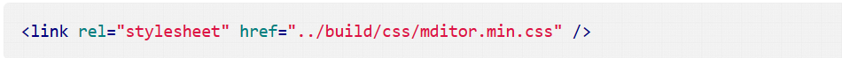
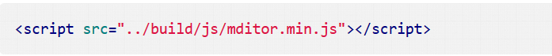

分享人：景鑫
目录
1.背景介绍
2.知识剖析
3.常见问题
4.解决方案
5.编码实战
6.扩展思考
7.参考文献
8.更多讨论
在做Web应用时，经常会进行富文本编辑，常用的富文本编辑器有很多， 比如CuteEditor、CKEditor、NicEditor、KindEditor、UEditor等等。 好的富文本编辑器可以让我们用户有更好的体验效果，带来更多的用户好评。
今天给大家介绍一款轻量级的文本编辑器，实际上是markdown编辑器，即把文本的格式用 markdown语法表示出来，进行网络传输。这个编辑器的有点是引用非常简单，轻量级，转化为 的markdown格式可以把文本格式占用的存储空间降低很多，非常易于网络传输，后面会简单介绍 一下markdown语法
步骤一：引入 Mditor 样式文件

步骤二：引用 Mditor 脚本文件

只适合简单的文本排版，不支持复杂的表情输入、图片排版、格式刷等等功能， 如果需要使用复杂功能，最好还是使用UEditor、wangEditor等富文本编辑器
Markdown语法最大的优点是「易读易写」。 可读性，无论如何，都是最重要的。一份使用 Markdown 格式撰写的文件应该可以直接以纯文本发布， 并且看起来不会像是由许多标签或是格式指令所构成。Markdown 语法的目标是：成为一种适用于网络的书写语言。
通俗点的说法即是Markdown语法通过使用一些简单的符号来将文本的排版表现出来，实现了 对文本格式存储数据量的简化，它和html有很好的兼容性可以相互转化，比如markdown中使用 #符号来表示html中的<h1></h1>标签，用一对*围在内容两边来表示<strong></strong>
参考一：meditor的github主页
参考二：知乎--markdown是什么
大家还用过那些好用的富文本编辑器
感谢大家观看
BY : 景鑫